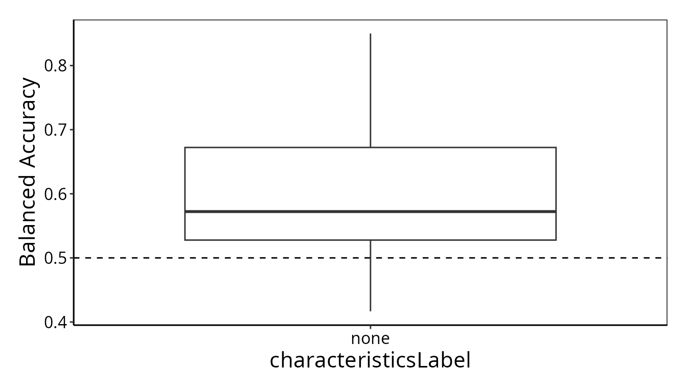

A detailed explanation of scFeatures' features
Source:vignettes/scFeatures_overview.Rmd
scFeatures_overview.RmdIntroduction
scFeatures is a tool for generating multi-view representations of samples in a single-cell dataset. This vignette provides an overview of scFeatures. It uses the main function to generate features and then illustrates case studies of using the generated features for classification, survival analysis and association study.
Running scFeatures
scFeatures can be run using one line of code
scfeatures_result <- scFeatures(data), which generates a
list of dataframes containing all feature types in the form of samples x
features.
data("example_scrnaseq" , package = "scFeatures")
data <- example_scrnaseq
scfeatures_result <- scFeatures(data = data@assays$RNA@data, sample = data$sample, celltype = data$celltype,
feature_types = "gene_mean_celltype" ,
type = "scrna",
ncores = 1,
species = "Homo sapiens")By default, the above function generates all feature types. To reduce
the computational time for the demonstrate, here we generate only the
selected feature type “gene mean celltype”. More information on the
function customisation can be obtained by typing
?scFeatures()
Classification of conditions using the generated features
To build disease prediction model from the generated features we
utilise ClassifyR.
The output from scFeatures is a matrix of sample x feature, ie, the
row corresponds to each sample, the column corresponds to the feature,
and can be directly used as the X. The order of the rows is
in the order of unique(data$sample).
Here we use the feature type gene mean celltype as an example to build classification model on the disease condition.
feature_gene_mean_celltype <- scfeatures_result$gene_mean_celltype
# inspect the first 5 rows and first 5 columns
feature_gene_mean_celltype[1:5, 1:5]
#> Naive T Cells--SNRPD2 Naive T Cells--NOSIP Naive T Cells--IL2RG
#> Pre_P8 1.6774074 1.856023 1.834704
#> Pre_P6 3.4815573 3.217231 3.583760
#> Pre_P27 0.0000000 1.486346 1.742069
#> Pre_P7 1.1761242 1.282083 2.050024
#> Pre_P20 0.6999054 1.315393 2.781787
#> Naive T Cells--ALDOA Naive T Cells--LUC7L3
#> Pre_P8 1.598921 1.8056758
#> Pre_P6 3.493135 0.0000000
#> Pre_P27 3.518687 1.5080699
#> Pre_P7 2.575957 0.9163035
#> Pre_P20 1.626403 1.2659969
# inspect the dimension of the matrix
dim(feature_gene_mean_celltype)
#> [1] 19 2217We recommend using ClassifyR::crossValidate to do
cross-validated classification with the extracted feaures.
library(ClassifyR)
# X is the feature type generated
# y is the condition for classification
X <- feature_gene_mean_celltype
y <- data@meta.data[!duplicated(data$sample), ]
y <- y[match(rownames(X), y$sample), ]$condition
# run the classification model using random forest
result <- ClassifyR::crossValidate(
X, y,
classifier = "randomForest", nCores = 2,
nFolds = 3, nRepeats = 5
)
ClassifyR::performancePlot(results = result)
It is expected that the classification accuracy is low. This is because we are using a small subset of data containing only 3523 genes and 519 cells. The dataset is unlikely to contain enough information to distinguish responders and non-responders.
Survival analysis using the generated features
Suppose we want to use the features to perform survival analysis. In here, since the patient outcomes are responder and non-responder, and do not contain survival information, we randomly “generate” the survival outcome for the purpose of demonstration.
We use a standard hierarchical clustering to split the patients into 2 groups based on the generated features.
library(survival)
library(survminer)
X <- feature_gene_mean_celltype
X <- t(X)
# run hierarchical clustering
hclust_res <- hclust(
as.dist(1 - cor(X, method = "pearson")),
method = "ward.D2"
)
set.seed(1)
# generate some survival outcome, including the survival days and the censoring outcome
survival_day <- sample(1:100, ncol(X))
censoring <- sample(0:1, ncol(X), replace = TRUE)
cluster_res <- cutree(hclust_res, k = 2)
metadata <- data.frame( cluster = factor(cluster_res),
survival_day = survival_day,
censoring = censoring)
# plot survival curve
fit <- survfit(
Surv(survival_day, censoring) ~ cluster,
data = metadata
)
ggsurv <- ggsurvplot(fit,
conf.int = FALSE, risk.table = TRUE,
risk.table.col = "strata", pval = TRUE
)
ggsurvThe p-value is very high, indicating there is not enough evidence to claim there is a survival difference between the two groups. This is as expected, because we randomly assigned survival status to each of the patient.
Association study of the features with the conditions
scFeatures provides a function that automatically run association study of the features with the conditions and produce an HTML file with the visualisation of the features and the association result.
For this, we would first need to generate the features using scFeatures and then store the result in a named list format.
For demonstration purpose, we provide an example of this features list. The code below show the steps of generating the HTML output from the features list.
# here we use the demo data from the package
data("scfeatures_result" , package = "scFeatures")
# here we use the current working directory to save the html output
# modify this to save the html file to other directory
output_folder <- tempdir()
run_association_study_report(scfeatures_result, output_folder )
#> /usr/lib/rstudio-server/bin/quarto/bin/tools/pandoc +RTS -K512m -RTS output_report.knit.md --to html4 --from markdown+autolink_bare_uris+tex_math_single_backslash --output /tmp/RtmpKrSVvj/output_report.html --lua-filter /enna/nobackup/yuec/R/rmarkdown/rmarkdown/lua/pagebreak.lua --lua-filter /enna/nobackup/yuec/R/rmarkdown/rmarkdown/lua/latex-div.lua --embed-resources --standalone --variable bs3=TRUE --section-divs --table-of-contents --toc-depth 3 --variable toc_float=1 --variable toc_selectors=h1,h2,h3 --variable toc_collapsed=1 --variable toc_print=1 --template /enna/nobackup/yuec/R/rmarkdown/rmd/h/default.html --no-highlight --variable highlightjs=1 --number-sections --variable theme=bootstrap --mathjax --variable 'mathjax-url=https://mathjax.rstudio.com/latest/MathJax.js?config=TeX-AMS-MML_HTMLorMML' --include-in-header /tmp/RtmpKrSVvj/rmarkdown-str1260a933756315.html --variable code_folding=hide --variable code_menu=1Inside the directory defined in the output_folder, you
will see the html report output with the name
output_report.html.
sessionInfo()
sessionInfo()
#> R version 4.3.1 (2023-06-16)
#> Platform: x86_64-pc-linux-gnu (64-bit)
#> Running under: Debian GNU/Linux 12 (bookworm)
#>
#> Matrix products: default
#> BLAS: /usr/lib/x86_64-linux-gnu/openblas-pthread/libblas.so.3
#> LAPACK: /usr/lib/x86_64-linux-gnu/openblas-pthread/libopenblasp-r0.3.21.so; LAPACK version 3.11.0
#>
#> locale:
#> [1] LC_CTYPE=C.UTF-8 LC_NUMERIC=C LC_TIME=C.UTF-8
#> [4] LC_COLLATE=C.UTF-8 LC_MONETARY=C.UTF-8 LC_MESSAGES=C.UTF-8
#> [7] LC_PAPER=C.UTF-8 LC_NAME=C LC_ADDRESS=C
#> [10] LC_TELEPHONE=C LC_MEASUREMENT=C.UTF-8 LC_IDENTIFICATION=C
#>
#> time zone: Australia/Sydney
#> tzcode source: system (glibc)
#>
#> attached base packages:
#> [1] grid graphics stats4 stats utils methods base
#>
#> other attached packages:
#> [1] data.table_1.14.8 enrichplot_1.20.0
#> [3] DOSE_3.26.1 clusterProfiler_4.8.1
#> [5] msigdbr_7.5.1 EnsDb.Hsapiens.v79_2.99.0
#> [7] ensembldb_2.24.0 AnnotationFilter_1.24.0
#> [9] GenomicFeatures_1.52.1 org.Hs.eg.db_3.17.0
#> [11] AnnotationDbi_1.62.2 plotly_4.10.3
#> [13] igraph_1.5.1 tidyr_1.3.0
#> [15] DT_0.30 limma_3.56.2
#> [17] pheatmap_1.0.12 dplyr_1.1.3
#> [19] reshape2_1.4.4 survminer_0.4.9
#> [21] ggpubr_0.6.0 ggplot2_3.4.4
#> [23] ClassifyR_3.7.2 survival_3.5-7
#> [25] BiocParallel_1.34.2 MultiAssayExperiment_1.26.0
#> [27] SummarizedExperiment_1.30.2 Biobase_2.60.0
#> [29] GenomicRanges_1.52.0 GenomeInfoDb_1.36.1
#> [31] IRanges_2.34.1 MatrixGenerics_1.12.2
#> [33] matrixStats_1.0.0 generics_0.1.3
#> [35] SeuratObject_5.0.0 sp_2.1-1
#> [37] scFeatures_1.3.3 S4Vectors_0.38.1
#> [39] BiocGenerics_0.46.0 BiocStyle_2.28.0
#>
#> loaded via a namespace (and not attached):
#> [1] R.methodsS3_1.8.2 GSEABase_1.62.0
#> [3] progress_1.2.2 EnsDb.Mmusculus.v79_2.99.0
#> [5] goftest_1.2-3 Biostrings_2.68.1
#> [7] HDF5Array_1.28.1 vctrs_0.6.4
#> [9] spatstat.random_3.2-1 digest_0.6.33
#> [11] png_0.1-8 shape_1.4.6
#> [13] ggrepel_0.9.4 deldir_1.0-9
#> [15] parallelly_1.36.0 MASS_7.3-60
#> [17] pkgdown_2.0.7 httpuv_1.6.12
#> [19] foreach_1.5.2 qvalue_2.32.0
#> [21] withr_2.5.1 ggfun_0.1.3
#> [23] xfun_0.40 ellipsis_0.3.2
#> [25] memoise_2.0.1 proxyC_0.3.4
#> [27] commonmark_1.9.0 gson_0.1.0
#> [29] systemfonts_1.0.5 tidytree_0.4.5
#> [31] ragg_1.2.6 zoo_1.8-12
#> [33] GlobalOptions_0.1.2 gtools_3.9.4
#> [35] SingleCellSignalR_1.12.0 R.oo_1.25.0
#> [37] prettyunits_1.2.0 KEGGREST_1.40.0
#> [39] promises_1.2.1 httr_1.4.7
#> [41] downloader_0.4 rstatix_0.7.2
#> [43] restfulr_0.0.15 globals_0.16.2
#> [45] rhdf5filters_1.12.1 rhdf5_2.44.0
#> [47] rstudioapi_0.15.0 babelgene_22.9
#> [49] curl_5.0.2 zlibbioc_1.46.0
#> [51] ScaledMatrix_1.8.1 ggraph_2.1.0
#> [53] polyclip_1.10-6 GenomeInfoDbData_1.2.10
#> [55] xtable_1.8-4 stringr_1.5.0
#> [57] desc_1.4.2 evaluate_0.22
#> [59] S4Arrays_1.0.6 BiocFileCache_2.8.0
#> [61] hms_1.1.3 bookdown_0.36
#> [63] irlba_2.3.5.1 colorspace_2.1-0
#> [65] filelock_1.0.2 spatstat.data_3.0-3
#> [67] magrittr_2.0.3 ggtree_3.8.0
#> [69] viridis_0.6.4 later_1.3.1
#> [71] lattice_0.22-5 spatstat.geom_3.2-7
#> [73] future.apply_1.11.0 genefilter_1.82.1
#> [75] shadowtext_0.1.2 XML_3.99-0.14
#> [77] scuttle_1.10.1 cowplot_1.1.1
#> [79] ggupset_0.3.0 pillar_1.9.0
#> [81] nlme_3.1-163 iterators_1.0.14
#> [83] caTools_1.18.2 compiler_4.3.1
#> [85] beachmat_2.16.0 stringi_1.7.12
#> [87] tensor_1.5 GenomicAlignments_1.36.0
#> [89] plyr_1.8.9 crayon_1.5.2
#> [91] abind_1.4-5 BiocIO_1.10.0
#> [93] gridGraphics_0.5-1 ggtext_0.1.2
#> [95] locfit_1.5-9.8 graphlayouts_1.0.1
#> [97] bit_4.0.5 fastmatch_1.1-4
#> [99] codetools_0.2-19 textshaping_0.3.7
#> [101] BiocSingular_1.16.0 crosstalk_1.2.0
#> [103] bslib_0.5.1 multtest_2.56.0
#> [105] mime_0.12 splines_4.3.1
#> [107] markdown_1.11 circlize_0.4.15
#> [109] Rcpp_1.0.11 datasets_4.3.1
#> [111] dbplyr_2.4.0 sparseMatrixStats_1.12.2
#> [113] HDO.db_0.99.1 gridtext_0.1.5
#> [115] knitr_1.44 blob_1.2.4
#> [117] utf8_1.2.4 fs_1.6.3
#> [119] listenv_0.9.0 DelayedMatrixStats_1.22.1
#> [121] GSVA_1.48.2 ggplotify_0.1.2
#> [123] ggsignif_0.6.4 tibble_3.2.1
#> [125] Matrix_1.6-4 statmod_1.5.0
#> [127] tweenr_2.0.2 pkgconfig_2.0.3
#> [129] tools_4.3.1 cachem_1.0.8
#> [131] RSQLite_2.3.1 viridisLite_0.4.2
#> [133] DBI_1.1.3 fastmap_1.1.1
#> [135] rmarkdown_2.25 scales_1.2.1
#> [137] Rsamtools_2.16.0 broom_1.0.5
#> [139] sass_0.4.7 patchwork_1.1.3
#> [141] BiocManager_1.30.22 dotCall64_1.1-0
#> [143] graph_1.78.0 carData_3.0-5
#> [145] farver_2.1.1 scatterpie_0.2.1
#> [147] tidygraph_1.2.3 yaml_2.3.7
#> [149] rtracklayer_1.60.0 cli_3.6.1
#> [151] purrr_1.0.2 lifecycle_1.0.3
#> [153] bluster_1.10.0 backports_1.4.1
#> [155] annotate_1.78.0 gtable_0.3.4
#> [157] rjson_0.2.21 progressr_0.14.0
#> [159] parallel_4.3.1 ape_5.7-1
#> [161] jsonlite_1.8.7 edgeR_3.42.4
#> [163] bitops_1.0-7 bit64_4.0.5
#> [165] Rtsne_0.16 yulab.utils_0.1.0
#> [167] spatstat.utils_3.0-4 BiocNeighbors_1.18.0
#> [169] ranger_0.15.1 RcppParallel_5.1.7
#> [171] jquerylib_0.1.4 metapod_1.8.0
#> [173] GOSemSim_2.26.0 dqrng_0.3.1
#> [175] survMisc_0.5.6 R.utils_2.12.2
#> [177] lazyeval_0.2.2 shiny_1.7.5.1
#> [179] htmltools_0.5.6.1 KMsurv_0.1-5
#> [181] GO.db_3.17.0 rappdirs_0.3.3
#> [183] glue_1.6.2 spam_2.10-0
#> [185] XVector_0.40.0 RCurl_1.98-1.12
#> [187] treeio_1.24.1 rprojroot_2.0.3
#> [189] scran_1.28.1 gridExtra_2.3
#> [191] AUCell_1.22.0 R6_2.5.1
#> [193] SingleCellExperiment_1.22.0 gplots_3.1.3
#> [195] km.ci_0.5-6 labeling_0.4.3
#> [197] cluster_2.1.4 Rhdf5lib_1.22.0
#> [199] aplot_0.2.2 DelayedArray_0.26.6
#> [201] tidyselect_1.2.0 ProtGenerics_1.32.0
#> [203] ggforce_0.4.1 xml2_1.3.5
#> [205] car_3.1-2 future_1.33.0
#> [207] rsvd_1.0.5 munsell_0.5.0
#> [209] KernSmooth_2.23-22 grDevices_4.3.1
#> [211] htmlwidgets_1.6.2 fgsea_1.26.0
#> [213] RColorBrewer_1.1-3 biomaRt_2.56.1
#> [215] rlang_1.1.1 spatstat.sparse_3.0-3
#> [217] spatstat.explore_3.2-5 fansi_1.0.5